Bienvenue Sur Medical Education
Fractures : os zygomatique
Spécialité : traumatologie /
Points importants
-
Rechercher une urgence vitale (dans le cadre d'un polytraumatisme) ou fonctionnelle notamment ophtalmologique :
-
rechercher systématiquement des signes cliniques de fracture du plancher orbitaire (diplopie, énophtalmie)
-
scanner du massif facial si suspicion de fracture du plancher orbitaire
-
Anatomie du zygoma :
- rechercher systématiquement des signes cliniques de fracture du plancher orbitaire (diplopie, énophtalmie)
- scanner du massif facial si suspicion de fracture du plancher orbitaire
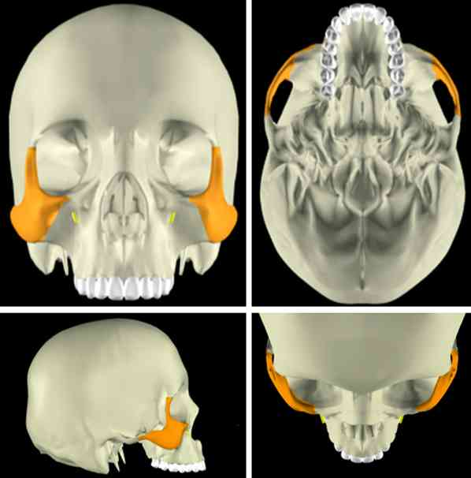 _72 Anatomie du zygoma
-
En pratique, distinguer 2 zones :
-
le corps du zygoma :
- cette fracture est associée à une fracture du plancher orbitaire déplacée ou pas (anatomiquement le zygoma constitue la partie antéro-externe du plancher orbitaire)
-
l'arcade zygomatique :
- isolée, elle n'est pas associée à une fracture du plancher orbitaire
-
le corps du zygoma :
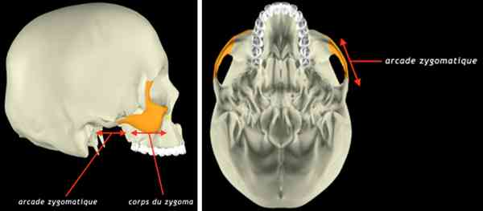 _646 Anatomie du zygoma : corps et arcade
Présentation clinique / CIMU
SIGNES FONCTIONNELS
Spécifiques
- Limitation douloureuse de l'ouverture buccale (trismus) si fracture de l'arcade zygomatique (contusion ou embrochement du muscle temporal)
- Douleurs en regard des sites de fracture
CONTEXTE
Terrain
- Homme jeune dans 2/3 des cas
Circonstances de survenue
- AVP +++
- Rixe ++
- Accident sportif
- Chute
- Mécanisme : choc direct
EXAMEN CLINIQUE
Inspection
- Effacement de la pommette (corps zygomatique)
- Enfoncement de l'arcade zygomatique
- Oedème ± ecchymose palpébro-jugale pouvant masquer les déformations
- Hémorragie sous-conjonctivale classiquement inféro-externe
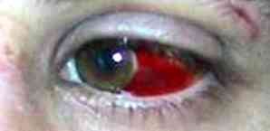 _517 Photo Hémorragie sous-conjonctivale
- Dystopie canthale latérale (déplacement pilier orbitaire latéral)
- Epistaxis tari
- Epistaxis homolatéral (provenant de l'hémosinus)
- Absence de trouble de l'articulé dentaire
Palpation
-
Douleur exquise et décalage osseux aux sites lésionnels :
- « marche d'escalier » sur le rebord orbitaire inférieur
- pilier orbitaire externe (suture fronto-zygomatique)
- cintre maxillo-zygomatique (palpation endobuccale, vestibule supérieur) ± hématome muqueux en regard
- douleur et enfoncement de l'arcade zygomatique
-
hypo ou anesthésie dans le territoire cutané du nerf infraorbitaire (aile du nez, joue, hémi-lèvre supérieure, gencive et dents du groupe incisivo-canin homolatéral)
- 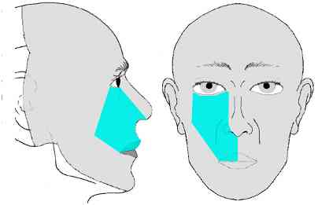 _518 Territoire cutané du nerf infraorbitaire
- emphysème sous-cutané de la joue (= passage de l'air en sous-cutané lors des efforts de mouchage pour éliminer sang des fosses nasales par rupture des parois du sinus maxillaire)
- parfois mobilité de l'os zygomatique
- Signes cliniques d'une fracture du plancher orbitaire
CCMU
- Tri 3
Signes paracliniques
IMAGERIE
Clichés standards (en l'absence de lésion du rachis cervical - analyse comparative)
-
Incidence de Blondeau :
- hémosinus maxillaire (niveau liquide)
- diastasis de la suture fronto-zygomatique (pilier orbitaire externe)
- décalage osseux (rupture de la courbe harmonieuse) de la margelle orbitaire inférieure et du cintre maxillo-zygomatique
- hémosinus
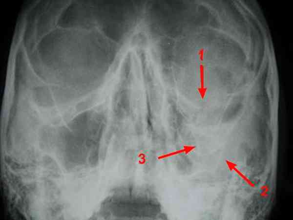 _649 Photo Incidence de Blondeau
-
Incidence de Hirtz ou "grand contour" : en l'absence de lésion du rachis cervical - analyse comparative
- rupture de la courbe harmonieuse de l'arcade zygomatique
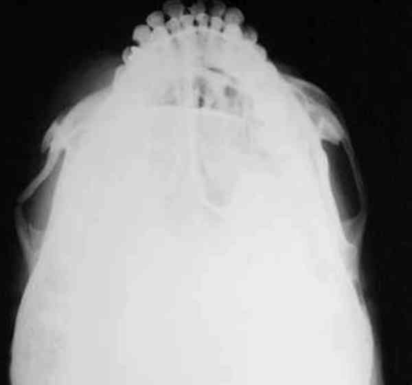 _650 Photo Incidence de Hirtz
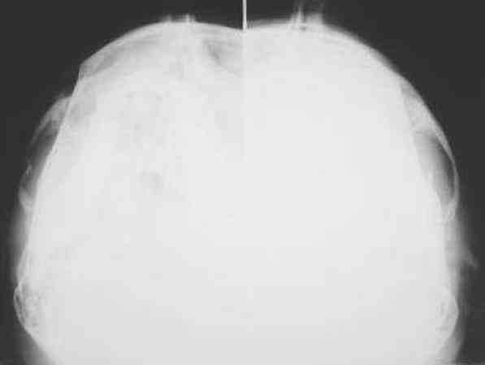 _651 Photo Incidence de Hirtz latéralisée droite et gauche
Scanner du massif facial
- Non indispensable si pas de signe clinique de fracture du plancher orbitaire
- Fractures ± déplacées du rebord orbitaire inférieur, de la suture fronto-zygomatique, du cintre maxillo-zygomatique, de l'arcade zygomatique
- Hémosinus maxillaire
- Fractures associées notamment du plancher orbitaire
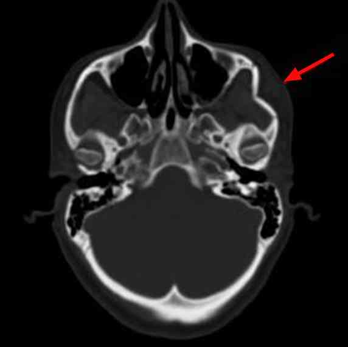 _652 TDM du massif facial coupe axiale 1
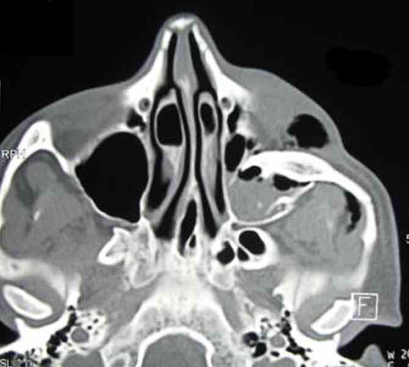 _653 TDM du massif facial coupe axiale 2
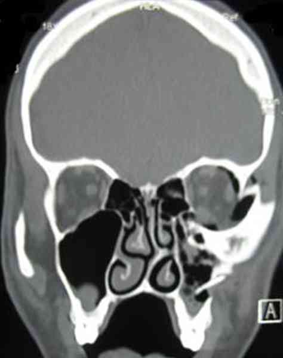 _654 TDM massif facial coupe coronale
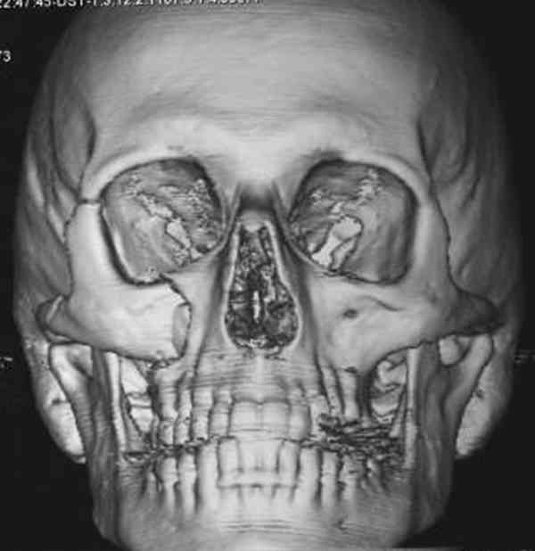 _655 Reconstruction TDM 3D 1
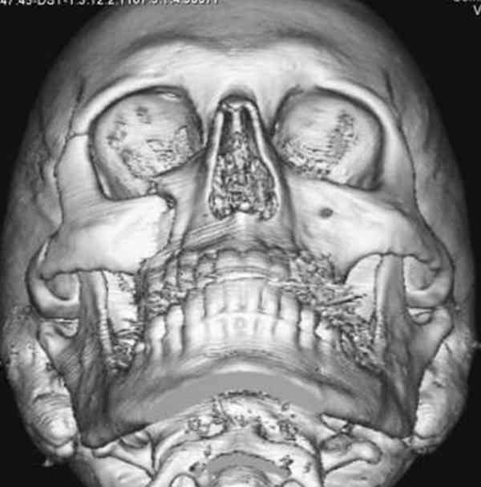 _656 Reconstruction TDM 3D 2
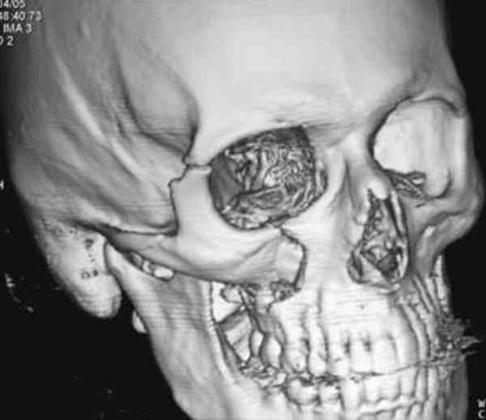 _657 Reconstruction TDM 3D 3
Traitement
TRAITEMENT EXTRAHOSPITALIER / INTRAHOSPITALIER
Stabilisation initiale
- Urgence relative, rechercher d'autres lésions associées (notamment pour les AVP) pour éliminer une urgence vitale ou fonctionnelle
- Contrôle clinique de l'acuité visuelle (écarter délicatement les paupières même en cas d'oedème important) et examen ophtalmologique en urgence au moindre doute
- A jeun
- Mouchage contre-indiqué
MEDICAMENTS
- Antalgiques IV si indication chirurgicale sinon per os
- Contrôle VAT et antibiothérapie (amoxicilline + acide clavulanique 1 g x 3/j) si plaie
Surveillance
CLINIQUE
-
Douleur
Devenir / orientation
CRITERES D'ADMISSION
Devenir / orientation
CRITERES D'ADMISSION
En pré hospitalier
- Transfert aux urgences de chirurgie maxillo-faciale si traumatisme isolé
- Transfert en réanimation si polytraumatisé
En intra hospitalier
- Fracture associée nécessitant une hospitalisation
CRITERES DE SORTIE DU SAU
- Si fracture isolée
ORDONNANCE DE SORTIE
- Irrigation des fosses nasales x 6 / j au sérum physiologique pendant 7 jours
- Pas de mouchage
- Antalgiques : paracétamol + codéine (Efferalgan codéiné®) 2 cp x 3/j
-
Soins locaux si plaie associée :
- sérum physiologique
- vaseline
- compresses stériles
- poursuite antibiothérapie : amoxicilline + acide clavulanique (Augmentin®) 1 g x 3/j pendant 5 jours
- ablation des fils à J+5
- Bilan radiologique réalisé ou prescrit
RECOMMANDATIONS DE SORTIE
- Pas de mouchage pendant 8 semaines
- Consultation en chirurgie maxillo-faciale dans les 3 jours suivant le traumatisme, (à jeun depuis 6h lors de la consultation)
- Arrêt de travail jusqu'à la consultation de chirurgie maxillo-faciale
- Pas de sport pendant 2 mois
- Protection solaire (écran total), si cicatrice, pendant 1 an
Bibliographie
-
Barbrel P et Géré . Fractures de l'orbite. Encycl Méd Chir (Editions Scientifiques et Médicales Elsevier SAS, Paris, tous droits réservés), Stomatologie, 22-072-A-10, 2001, 20 p
-
Duhamel P, Giraud O, Denhez F et Cantaloube D. Examen d'un traumatisé facial. Encycl Méd Chir (Editions Scientifiques et Médicales Elsevier SAS, Paris, tous droits réservés), Stomatologie, 22-068-A-05, 2002, 24 p
Auteur(s) : Aymeric BARRIER, Arnaud RIGOLET